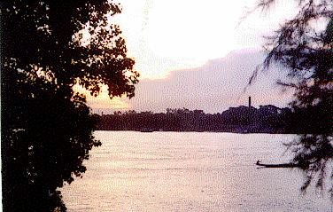

Chandannagore


A View of River Ganga from Chandannagore Strand
Unlike the rest of India which had been a British colony for two hundred years, Chandannagore was ruled by France. So she had an interesting history and identity which has fascinated the historians throughout the world.
The historians believe that a French tourist names Bernuer, who came to India in early 17th century, has been the first Frenchman to visit the place where the city stands now. The name Chandannagore was first mentioned in an official document signed up by Martin, Andre Boureau Deslande and Pelee dated 21 November 1696. Though the then French ruler Louis xiv declared the formation of The French East India Company on 26th May, 1664, where he showed special interest towards the coast of River Hooghly which is not far from the ancient port Saptagram.
In 1673, the French first stepped in Bengal. A man Duplesis taking the permission from Saayesta Khaan, secured 20 Arpents of land at Boro Bishnupur for Rs 401.
Francois Martin, the first representative of the French East India Company stepped at Pandicherry to build a business center in 1674. In 1688 he came to open the first Commercial Center on 21st November in the village named Boro. Aurangzeb gave permission to the French to make business against 100 thousand livre ( 40001 Rupees ). The French business center was formed. From Boro to Gondalpara, on the river side, a collection of a few villages were called Chandannagore. In the year 1691 Mr. Aumonier and Dutchetz first started constructing building, godowns and the wall surrounding the city at the cost of 26 thousand rupees. The French started exporting jute, wood and silk. The Committee came under the administration of Pondicherry in 1701 as Pondicherry was the main administrative center for the French while Chandannagore became the main commercial center.
Regular connection through water way occurred by the ships like Syrenna, Danae, Saint Joseph, Bazares. Chandannagore became the highest profitable center and exported materials amounting to 1 million of rupees in a year. The main point of export was Laxmiguange Bazar. The French spent about half of the annual budget devoted to India behind the development of the town. The French built Fort d'Orleans in 1696/97 in Chandannagore sensing the political turbulence due to the surrounding European powers.
On 16th August, 1731, Joseph Francois Dupleix landed at Pondicherry. He was a lover of music and art; and he became the chief administrator of Chandannagore. Under his supervision France could send the highest amount of money for business and for military purpose at that time. The road conditions were improved. Clubs and Hotels were built. One of the then famous Hotel, Hotel de Paris, is at present the Civil Court, and another hotel is now Chandannagore College. Dupleix was typically Bengali minded. He married a French lady, Jeanne Albart, more popular as Johanna Begam at Chandannagore. Among the ships that were built to keep connection with Pondicherry were Cauris and Chandannagore. He thought of making business with China and Arabian countries. As a commercial center the golden age came to an end with the termination of Dupleix administration by the treaty of Aix-la-Chappelle.
Chandannagore continued as the commercial center but completely banking on the local businessmen. Among them Indranarayan Chowdhury was the most prominent figure. In the year 1730 he was appointed the courtier of the Company. After two years, at a rate of Rupees 12 thousand per annum tax, the land of Chandannagore was leased to him. In the year 1735, Indranarayan Chowdhury received a gold medal from Louis xv, the King of France. He constructed the temple of Sri Nandadulal and a rest house in the year 1740.
Colonel Robert Clive of British East India Company Limited and Admiral Watson of British Army captured Chandannagore in March 23, 1757. It was a turning point of Indian history. Chandannagore was again recovered by the French through a treaty with the British but again lost to them in 1794 but ultimately ruled the town from 1816 to 1950.
In 1832 the French administrators set up the Comite de Bienfaisance whose main aim was to help the poor people. In 1862, Ecole de saint mare was established, which is at present one of the best educational institutions of the town - Kanailal Vidyamandir. In 1867 Alfred Curjon set up a convent for the upliftment of the women education system and the Convent exists till date as one of the best women school of the area. In 1871, a big hospital was set up in Chandannagore with the help of Doctor Margon. In the year 1896, Durga Charan Rakshit, the courtier of the French Government, achieved the distinction of becoming the first Indian to be conferred with the chevalier de legion d'Honour.
The moral, economic, land, industrial, business and political rights of the people of Chandannagar were guarded by the Comite Republican Radical de Chandannagar established in 1907 under the leadership of the great Indian leader Ashutosh Mukherjee. In 1908, during the Indian freedom movement, Kanailal Dutta who was a youth of 18 from Chandannagar became a martyr and this event became a landmark in the Indian history. In 1910, after the famous Alipore Bomb case, Aurobindo Ghosh took shelter in Chandannagore from where he ultimately left for Pondicherry. In 1912 the attempt to kill the then-oppressive English officer Hardinge had been the brain work of Rashbehari Bose and Srish Chandra Ghose form Chandannagore and the bomb was made by Manindra Naik, who too, was from the same town.
In 1915, twenty people from Chandannagore participated in World War I in support of the French people, which has been the first such instance in the Indian history. Kazi Nazrul Islam, a revolutionary poet of Bengal, who had been arrested by the Imperialistic British force many a times, had been a regular visitor to Chandannagore. He encouraged the local youth to fight against the British rule by his revolutionary songs which were banned in the British India.
The "Father of the Nation" Mahatma Gandhi came to Pravartak in Chandannagore to inspire people in the freedom struggle in 1925 and again in December, 1927. Meanwhile, a businessman from the town Durgadas Sett had come forward to establish a business organization Shilpa Samabaya whose motto was to earn money for the revolutionaries. He even started publishing an weekly named Sawadesh Bazar to encourage the movement. On 12th March, 1930 Mahatma Gandhi called the nation for the famous Dandi March against the infamous Salt Act. Yuba Samiti of Chandannagore came forward to support the movement with full enthusiasm.
The revolutionaries of Chattagram (now in Bangladesh) always had close relationship with their counterparts in Chandannagore. So, they took shelter in the French territory after the movement in April, 1930. Basanta Bhattacharya, a resident of the town, took the responsibility of providing them shelter. But in the midnight of 1st September, 1930 the British police force under Charles Teggart attacked the hideout and the freedom fighters had to surrender after a prolonged resistance. On the very next morning the people of Chandannagore came out in the street to start an agitation against the British rule under the leadership of Charu Roy. As the whole incident had been against the French law the people wanted to sue the British Police by French law. This created a turmoil and the British Government was forced to send back Teggart to save his life.
In the thirties the Communist movement was taking shape in India and Chandannagore took a leading part in it under the guidance of Dr. Hiren Chatterjee, a commissioner general under the French Government. As Chandannagore was under the French rule, the party decided to make it their district head quarter.
On
the 15th of August, 1947 India gained her freedom but Chandannagore remained
under the French rule. This prompted the people of the place to raise their
voice for total freedom. Under the continuous pressure from the people, the
French made a single voter list and handed over the ruling power partly to the
local body of Sasan Parisad. But, the people were not satisfied with anything
less than total freedom and started Satyagraha movement. In November 27th 1947,
the French Government declared Chandannagore a free city and gave more power to
Sasan Parisad.
In June 1948, the French Government went for a poll
to decide the status of the city and in the opinion poll a overwhelming majority
of 97% people expressed their desire to merge with India. So, in May 1950, the
French made a defacto transfer of Chandannagore to the Indian Government and on
2nd February, 1952 they made De Jure transfer which was approved by the French
Republican Society on 11th April 1952. On 2nd October 1954, Chandannagore
completely became a part of India.
Courtesy - http://www.geocities.com/TheTropics/Paradise/4243/frames.html